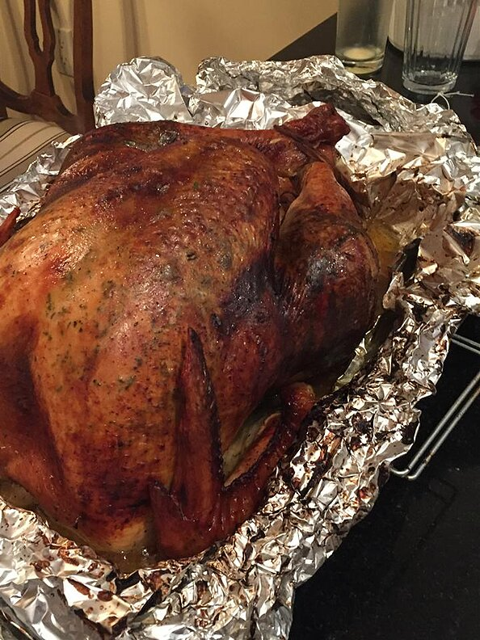

Thanksgiving Turkey

Description
This is a turkey dish made for Thanksgiving. Read further on for the ingredients and recipe.
Ingredients
- 2 tablespoons dried parsley
- 2 tablespoons ground dried rosemary
- 2 tablespoons rubbed dried sage
- 2 tablespoons dried thyme leaves
- 1 tablespoon lemon pepper
- 1 (15 pound) whole turkey, neck and giblets removed
- 1 onion, chopped
Steps
- Preheat an oven to 350 degrees F (175 degrees C). Line a turkey roaster with long sheets of aluminum foil that will be long enough to wrap over the turkey.
- Stir together the parsley, rosemary, sage, thyme, lemon pepper, and salt in a small bowl. Rub the herb mixture into the cavity of the turkey, then stuff with the celery, orange, onion, and carrot. Truss if desired, and place the turkey into the roasting pan. Pour the chicken broth and champagne over the turkey, making sure to get some champagne in the cavity. Bring the aluminum foil over the top of the turkey, and seal. Try to keep the foil from touching the skin of the turkey breast or legs.
- Saute; onions and celery in margarine/dripping mixture until onion is tender.
DO NOT BROWN. Stir in about 1/3 bread cubes.
Put in big bowl and add remaining bread cubes,
poultry seasoning, and pepper. Watch your hands, it's hot. Mix well.